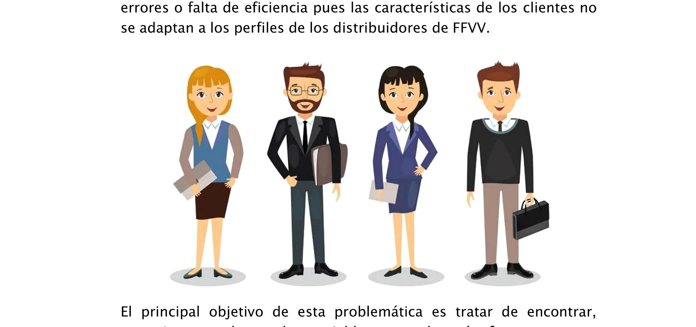

Caso Estudio N°17
Se entrega el siguiente set de datos de personas de la fuerza de ventas empresarial o de pequeños distribuidores (FVPD) de una compañía dedicada al rubo de la belleza, FuerzaVentasConvenios.xlsx en los cuáles observamos los datos de personas que dada una base de clientes o cartera se dedican a poder captarlos y ver la posibilidad de convertirlos en nuevos distribuidores de la compañía de belleza. En los últimos meses y debido a la reactivación paulatina en este tipo de venta, se observa que en la asignación de carteras existen algunos errores o falta de eficiencia pues las características de los clientes no se adaptan a los perfiles de los distribuidores de FFVV.
<image: DeviceRGB, width: 792, height: 483, bpc: 8>
El principal objetivo de esta problemática es tratar de encontrar, resumir o condensar las variables para después formar grupos, segmentos o bloques de pequeños distribuidores de FFVV y tener una mejor asignación de las carteras de los clientes.
- Las variables que se disponibilizan son:
<image: DeviceRGB, width: 748, height: 190, bpc: 8>
<image: DeviceRGB, width: 300, height: 168, bpc: 8>